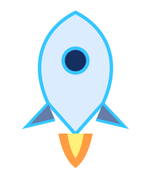
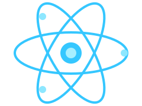
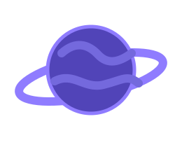
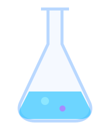
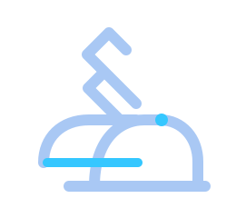
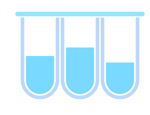
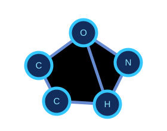
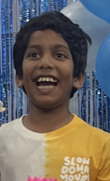

Science Zone
Science Questions
Explore fun facts about space, the human body, chemistry and more!
Question 1/10
Score 0
Best 0
Science
Loading...

Answer 3 questions correctly to launch into the Science Zone!







Explore fun facts about space, the human body, chemistry and more!